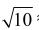
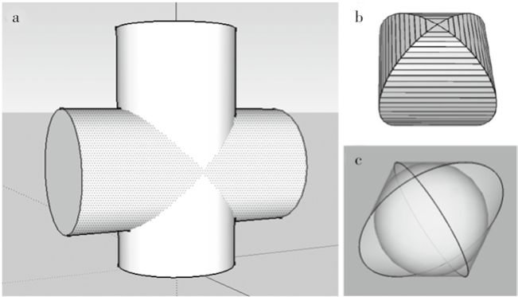
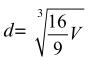
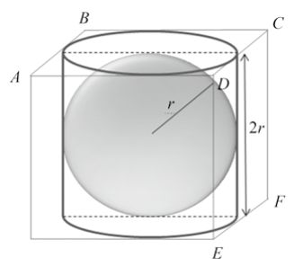
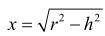
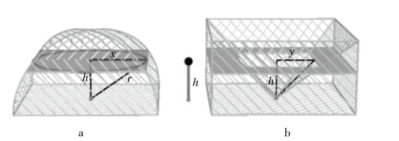

刘徽完成《九章算术注》的那一年（公元263年），三国中的曹魏王朝已经气息奄奄了。两年以后，相国司马炎逼迫魏元帝曹奂禅让，自立为帝，定国号为晋。公元280年，晋武帝司马炎消灭了孙吴，结束了三国鼎立的局面。经过了东汉末年的黄巾之乱（开始于公元184年）和三国时期，将近一个世纪之后，中原又得以统一，可是和平只有三十多年的时间，其中后一半还被皇室宗亲之间争夺皇位的战争（所谓“八王之乱”）搅得乱七八糟。公元306年，七王败死，东海王司马越胜出擅政。公元307年，晋惠帝死，有传说是被司马越毒死的，司马炽被立为怀帝。不久，匈奴贵族刘渊建汉（后称前赵）。匈奴势力不断增大，公元310年，大将石勒率重兵围困洛阳，司马越被迫弃城，率军队向东南撤离。次年，司马越在中途病死，晋军被石勒追击，主力军被全部消灭。后匈奴军队攻破洛阳，晋怀帝被俘，不久遭杀害。这个事件发生在晋怀帝永嘉年间，所以被称为“永嘉之乱”。鉴于周边的少数民族部族相继建立君主政权，严重威胁中原，公元313年，司马业被拥立为皇太子即帝位，是为愍帝，在长安建临时政府。临时政府支撑四年后，长安被匈奴军攻破，愍帝被俘，西晋亡。次年，司马睿在江南建立政权，史称东晋。这是中原汉人首次大规模南迁，史称“衣冠南渡”。他们建都于江东建康，也就是今天的南京。这也是中国都城迁至长江以南的开端。
魏晋年代是中原西北部的游牧民族部落开始强大的时代。他们大批进驻关中及泾水、渭水流域，被当时的汉人称为胡人。由于秦汉时代冒顿单于统一各族，建立匈奴帝国，胡人有时被当成匈奴的同义词。许多汉人搞不清乌桓、羯、鲜卑、匈奴、氐等民族的区别，通通称之为胡人。这些游牧民族自古居住在山西、陕西、河南、河北一带。“八王之乱”以后，晋室分裂，国力空虚，民生凋敝。尤其是石勒灭掉晋军主力之后，汉族的军事力量迅速衰退，胡人趁机起兵南下，夺取中原地区的控制权，于是中原大乱，史称“五胡乱华”。各种各样的小国家一会儿建立，一会儿消亡，史称“五胡十六国”。其间战争不断，中原人口骤减。
根据《晋纪》《晋书》的记载，永嘉丧乱以后，中原的士族剩下不到十分之一。《晋书·王导传》说，洛阳倾覆以后，中原的士族有六七成都迁徙到长江下游的江南避难。北方汉人能走的都走了，不能走的纠合宗族乡党建立坞堡以自保。此时，打败晋军的大将石勒已经取代前赵皇帝，自立为帝，他建立的国家被后人称为后赵。他的统治非常残暴，他的侄儿、后赵武帝石虎更是嗜杀成性，他的暴行最后引发了卫兵暴动，使后赵的国势迅速衰微。
公元350年，汉人冉闵趁机篡夺后赵的王位，改国号为“魏”。这个不到两年的短命政权，史称冉魏。冉闵的父亲冉瞻是石虎的养子，曾经为石勒建立后赵立下汗马功劳。可是冉闵一登基就发布“杀胡令”，宣布“六夷胡人”有敢持兵器的一律斩首。这下胡人遭了殃，他们纷纷逃出中原，逃跑中因为粮食、牲畜、财产等原因不断彼此争斗，伤亡惨重。中原各民族之间这样互相杀戮，战火数十年不断。等到“五胡乱华”的后期，除了汉族和鲜卑族仍保存了一定势力和明显的民族认同外，匈奴、羯、羌、氐各族或被大量屠杀，或逐渐被汉族同化，都不存在了。最后，鲜卑族拓跋部在北方获取胜利，在公元386年建立北魏，逐渐统治了华北地区。汉族政权则据守江南，在公元420年建立了刘宋王朝（也被称作南朝宋）。一百多年的大灾变之后，中国进入南北朝时期。
祖冲之（公元429—公元500）是在这样巨大的社会动荡之后出生的。他的祖籍是范阳郡遒县（今河北省保定市涞水县），祖上好几代都是汉人朝廷里负责土木工程的官员，后来随着“衣冠南渡”的潮流，他们家族迁移到了江南。祖冲之本人应该是在江南出生的。祖家历代都对天文历法和数学有研究，从祖冲之的曾祖祖台之到他的儿子祖暅，连续五代都致力于数学研究。这在世界上也是少有的，尤其是在那个战乱频仍的时代。祖冲之从小就有机会接触天文、数学知识。他还很年轻的时候，就有博学多才的名声，以致被宋孝武帝听到，派他到华林学省任职。华林园是两晋时期的皇家名园，华林学省是华林园里藏书著述的地方，也就是皇家图书馆。公元464年，他到娄县（今江苏昆山东北）当县令，在此期间他编制了《大明历》，计算了圆周率。
在《九章算术》里面，圆周率是用数字3来近似的。中国最早明确给出圆周率估计值的是张衡（公元78—公元139）。他先后计算出π的值近似于92/29≈3.172 4、

≈3.1623和 730/232≈3.146 6。刘徽认为张衡的近似值都偏大。他创造了一个估算圆周率的方法，叫割圆术。这和我们前面提到过的阿基米德的方法基本上是一样的。不过，刘徽偏重应用，他的方法是一个数学上可以计算圆周率到任意精度的迭代程序。刘徽把圆切割成一个192边的多边形，得到圆周率在3.141 024和3.142 704之间，并建议近似值用分数157/50＝3.14来表示，历史上称为徽率。他利用晋武库里珍藏的王莽时代制造的铜制体积度量衡标准器皿（新莽嘉量斛）的直径和容积直接测量检验，发现3.14这个值还是偏小。后来，他又发明了一种更加快捷的方法（捷法），只借助96边形就能得到和1536边形同等精度的π值，最后求出自己满意的圆周率近似值3.141 6。祖冲之采用刘徽的割圆术，把圆周分成有24 576个边的多边形，得到著名的圆周率不等式3.141 592 6＜π＜3.141 592 7。他还建议用两个分数来近似圆周率：约率（又叫肭率）22/7≈3.142 86，密率 355/113≈3.141 59。
跟这个结果一模一样的密率，在欧洲直到1586年才由荷兰人安东尼茨（Adriaan Anthonisz，公元1541—公元1620）求得。但是祖冲之的计算方法是刘徽在二百年前就提出来的，不是自己的独创。所以后来有人认为，在圆周率的问题上，祖冲之刻苦精神可嘉，创新不足。比如，清朝人阮元就在《畴人传》里说：“后祖冲之更创密法，仍是割之又割耳，未能于徽注之外，别立新术也。”
祖冲之还有一项极富创新的工作，但不大为人们所知，那就是得出圆球的体积和直径的关系。我们前面看到，阿基米德在祖冲之以前大约六百年前就得到了这个关系，但中国对他的工作并不知晓。祖冲之用与阿基米德完全不同的办法，得到了相同的结果。他和儿子首先设立一个定理：两个等高的物体，如果沿着高的方向截面面积处处相等，它们必具有相同的体积。这个定理的基点同阿基米德切割求和的思路相同。设想有很多铜钱，把它们一个个叠加起来，可以构成一个圆柱体。如果把它们之间的水平位置错开一些，也可以构成一个螺旋体或其他什么形状。既然每枚铜钱的体积是一定的，它们的体积的总和当然不变。根据这个原理，他们父子俩思考一个奇怪的几何形状的体积，名叫“牟合方盖”（图15）。

图 15：牟合方盖示意图
所谓的牟合方盖，就是两个同等直径的圆柱垂直相交而切出来的形状，如图15b所示。这个奇形怪状的东西最初是刘徽想出来的。刘徽在研究《九章算术》的时候，发现球体体积的计算公式是错误的：“开立方圆球法：以16乘体积，取它的九分之一开立方，就得到直径。”用现代代数语言，这句话就是说，

，这里d是球的直径，V是体积。换句话说，V=(9/16)d3。在《九章算术》的年代，人们习惯用数字3来近似圆周率。所以，《九章算术》给出的球体体积公式有可能是V=(3/2)πr3，这里r是球的半径。但这显然是不对的。刘徽首先看出了问题，并设法寻找错误的来源。他认为，《九章算术》在估算球体体积的时候，采用的方法是比较球、圆柱和立方体之间的体积比例，如图16所示。

图 16 ：球、圆柱和立方体之间的体积比例示意图
这里，半径为r的球体被半径为r、高为2r的圆柱内切（这就是阿基米德为自己的坟墓所设计的纪念碑的样子）。立方体的边长也是2r。刘徽说，我们不晓得前人是怎样得到16∶9这个比例的，但可以猜猜看。从垂直于平面ABCD的方向看下去，圆柱和球体截面（都是圆）的比值是1∶1，而立方体跟圆柱的截面，一是方，一是圆，所以比值是4∶3（这里的3相当于π）。从垂直于平面CDEF的方向看呢，圆柱和球体截面（一圆一方）的比值是4∶3，立方体和圆柱的截面（都是方形）的比例是1∶1。于是刘徽说，《九章算术》的作者可能是根据立方体和球体在两个相互垂直方向投影的比例之积（4/3*4/3=16/9）来估计球体体积的。
问题在于，上面所说的截面是球体的最大截面（半径=r的截面）。如果沿着每个投影方向一层层地切割这个球体，你就会发现，绝大多数截面的半径都小于r。所以刘徽说，(16/9)V球＝V立方的估计是不对的。
沿着这个思路继续下去，刘徽说，16/9对球体体积更好的估算不是立方体，而是两个相互垂直的圆柱相互切出来的体积，也就是图15那个牟合方盖。看看图15b，它是不是很像两把张开的方伞，一上一下紧紧扣在一起？再仔细看看，你就会发现，这个奇形怪状的东西有三个特点：一、沿着垂直于两根圆柱的任何一根的轴线作截面，所有的截面都是半径为r的圆形；二、如果在两根圆柱都垂直的方向作截面，那么所有的截面都是方形（图15b）；三、半径为r的球体恰好被牟合方盖内切（图15c）。
根据这些性质，刘徽说，的估计更适合于牟合方盖；对于球体来说，利用这个比值给出的球体体积就太大了。刘徽还注意到，牟合方盖的第二、三个特征说明，在牟合方盖截面为方形的方向，每一个内切的球体的圆形截面都恰好内切于牟合方盖的相应的方形截面。换句话说，在任何一个截面上，圆截面与方截面的比都是π/4。由此，刘徽推论说，牟合方盖同内切球体的体积比是π/4，当然，他用的比值是3/4。因此，只要求出牟合方盖的体积，球的体积就知道了。可是，刘徽没有算出牟合方盖的体积来。
祖冲之父子采用下面的思路来计算牟合方盖的体积。先把牟合方盖图15b切成对称的两半，只看上面的一半（下面的一半跟上面一模一样；找到了一半的体积，就知道了整个的体积）。这半个牟合方盖的底面是边长为2r的正方形。让我们在高出底面h的地方作一个截面，这个截面也是一个正方形，边长我们不知道，但可以用已知的半径r和高h来表示，如图17a所示。这里边长的一半x、高h及球体的半径r构成直角三角形（图17a），所以它们之间满足勾股定理，换句话说，

。因此，牟合方盖在高度为h的地方，其正方形截面的面积是4x2=4(r2-h2)。而以x为半径的圆的面积是πx2，所以在高为h的截面上，圆与正方形面积的比值是π/4。
图 17
下一步，祖氏父子选择了半个立方体，这半个立方体的底面的边长为2r，高为r（图17b）。从这半个立方体顶端的四个角向底面的中心点作直线，得到一个头朝下的“金字塔”，也就是底面为正方形的锥体。现在设想从这半个立方体内挖除“金字塔”，祖冲之父子要计算半个立方体内剩下的体积。利用跟前面半个牟合方盖同样的方法，考虑距离地面高为h处的截面。那里的面积是4r2-4y2。这里，y是挖去的倒立金字塔在高度h处边长的一半。我们知道，金字塔的高是r，底面的边长是2r。因此y=h。那么，对于我们的半个立方体来说，在高h处挖去的正方形的面积是4h2。也就是说，在高h处，剩下的面积是4r2-4h2。所以，在任何高度h上，牟合方盖的截面面积（图16a）跟挖去倒立金字塔的半个立方体的截面面积（图17b）都相等。根据他们父子提出的等截面原理，这两个东西的体积相等。
图17b的体积很容易求出，它等于 8/3r3。这就是半个牟合方盖的体积。因此，完整的牟合方盖的体积是 16/3r3。把这个结论乘以 π/4，就得到球体的体积。
“幂势既同，则积不容异”。这个原理现在叫作“祖暅原理”。这个命名是根据唐朝李淳风在《九章算术》里的注释的记录。我们不知道祖氏父子俩谁先想到的。其实，刘徽在得到牟合方盖体积同球体体积比等于 π/4 的时候，他的思路里也暗含了这个原理的推广：截面处处具有同等比值的等高物体，其体积之比必与此截面之比相等。